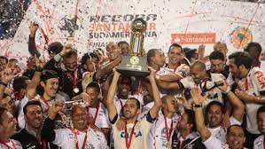
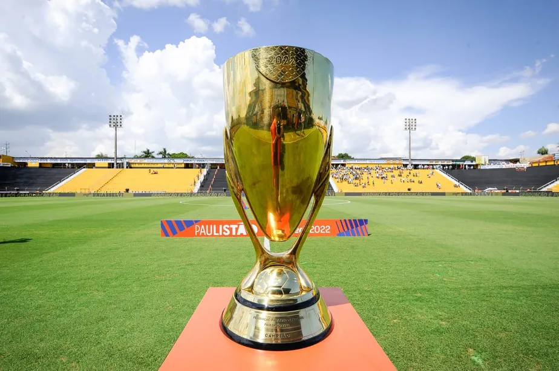
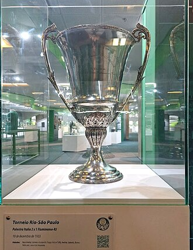
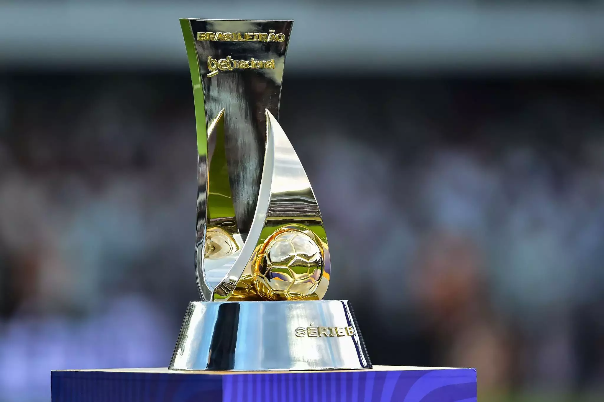
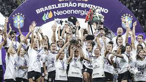
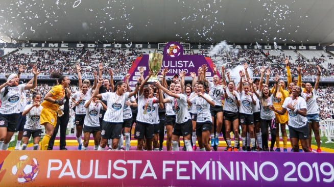
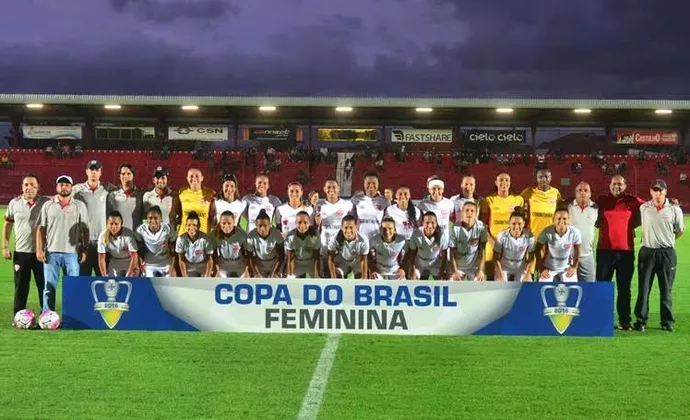
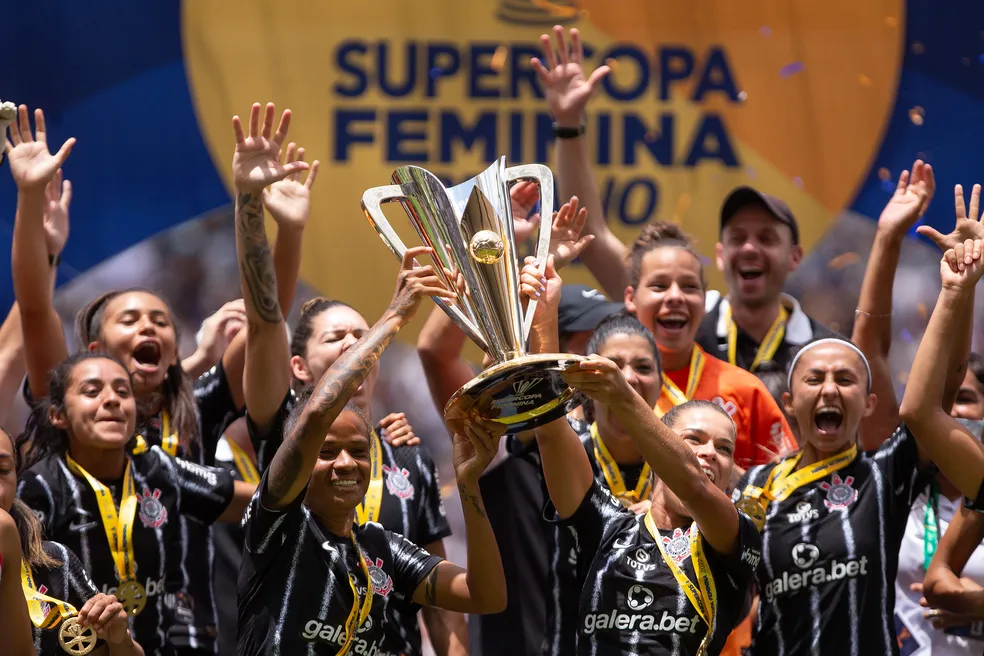

Titulos do Corinthians
O Corinthians é um dos clubes mais vitoriosos do Brasil: no masculino, soma 2 Mundiais, 1 Libertadores, 7 Brasileiros e é o maior campeão paulista; no feminino, as “Brabas” são hegemônicas, com 6 Libertadores, múltiplos Brasileiros e Paulistas, além de disputar em 2026 a primeira final do Mundial de Clubes Feminino da FIFA.
Títulos do Corinthians Masculino
Mundial de Clubes da FIFA: 2000, 2012


Copa Libertadores da América: 2012

Recopa Sul-Americana: 2013

Campeonato Brasileiro Série A: 7 títulos (1990, 1998, 1999, 2005, 2011, 2015, 2017)

Copa do Brasil: 4 títulos (1995, 2002, 2009, 2025)
Campeonato Paulista: 30 títulos (maior campeão da história, último em 2019)

Outros:
Supercopa do Brasil: 1991
Torneio Rio-São Paulo: 1950, 1953, 1954, 1966, 2002

Série B: 2008 (retorno imediato à elite)

Títulos do Corinthians Feminino
Desde a reativação em 2016, o Corinthians Feminino se tornou referência mundial
Copa Libertadores Feminina: 6 títulos (2017, 2019, 2021, 2023, 2024, 2025)
Campeonato Brasileiro Feminino: 5 títulos (2018, 2020, 2021, 2022, 2023)

Campeonato Paulista Feminino: 4 títulos (2019, 2020, 2021, 2023)

Copa do Brasil Feminina: 2016

Supercopa do Brasil Feminina: 2022

Outros feitos: presença em 29 finais desde 2016, recorde absoluto no futebol feminino brasileiro. Em 2026, disputa a primeira final do Mundial de Clubes Feminino da FIFA contra o Arsenal, em Londres